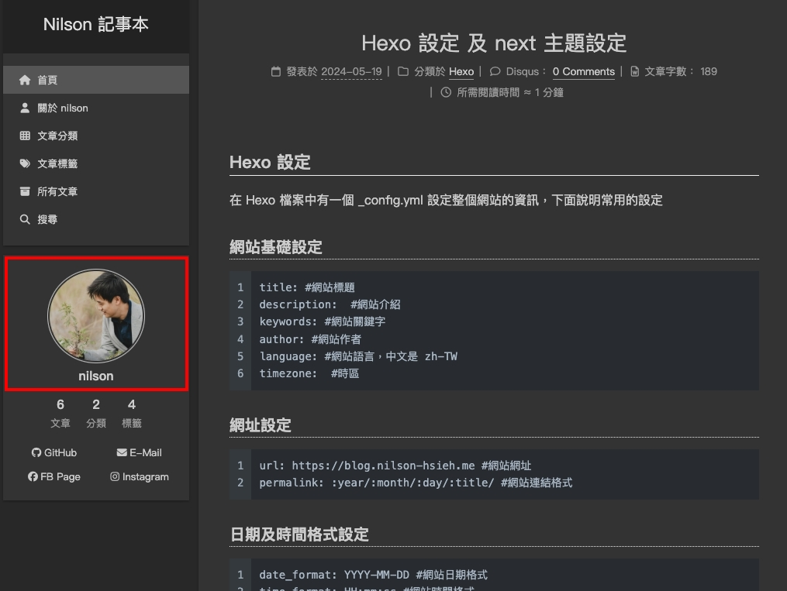

Hexo 設定
在 Hexo 檔案中有一個 _config.yml 設定整個網站的資訊，下面說明常用的設定
網站基礎設定
1
2
3
4
5
6
| title: #網站標題
description: #網站介紹
keywords: #網站關鍵字
author: #網站作者
language: #網站語言，中文是 zh-TW
timezone: #時區
|
網址設定
1
2
| url: https://blog.nilson-hsieh.me #網站網址
permalink: :year/:month/:day/:title/ #網站連結格式
|
日期及時間格式設定
1
2
| date_format: YYYY-MM-DD #網站日期格式
time_format: HH:mm:ss #網站時間格式
|
網站主題設定
1
| theme: next #網站主題設定，筆者選用 next 主題
|
部署方式設定
部署方式，在前一篇 將 Hexo 部署至 Github pages 有提到相關的設定
1
2
3
4
| deploy:
type:
repo:
branch:
|
next 主題安裝
透過 git 將主題安裝至 themes/next 下面
1
| git clone https://github.com/theme-next/hexo-theme-next themes/next
|
接著到 Hexo 的 _config.yml 將 theme 設定為 next
next 主題設定
在 themes/next 資料夾中 _config.yml 設定主題的資訊，下面說明常用的設定
格式： 網頁名稱 網址 || 顯示的圖示
1
2
3
4
5
6
| menu:
首頁: / || fa fa-home
關於我: /about/ || fa fa-user
文章分類: /categories/ || fa fa-th
文章標籤: /tags/ || fa fa-tags
所有文章: /archives/ || fa fa-archive
|
作者設定
這設定會顯示在右側個人資料的位址

1
2
3
4
| avatar:
url: #圖片的網址
rounded: true #開啟圓角
rotated: false
|
社群連結設定
格式： 社群名稱： 網址 || 顯示的圖示
1
2
3
4
5
6
7
8
9
10
| social:
GitHub: https://github.com/yourname/ || fab fa-github
E-Mail: mailto:yourmail || fa fa-envelope
Weibo: https://weibo.com/yourname || fab fa-weibo
Twitter: https://twitter.com/yourname || fab fa-twitter
FB Page: https://www.facebook.com/yourname/ || fab fa-facebook
StackOverflow: https://stackoverflow.com/yourname || fab fa-stack-overflow
YouTube: https://youtube.com/yourname || fab fa-youtube
Instagram: https://www.instagram.com/yourname/ || fab fa-instagram
Skype: skype:yourname?call|chat || fab fa-skype
|
1
2
3
4
5
6
7
8
9
10
11
12
| footer:
# 設定 在 copyright 跟資訊欄中間的 Icon
icon:
name: fa fa-heart
animated: false
color: "#999999"
# 設定 copyright 文字
copyright: Nilson | CC BY-NC 4.0
# 是否要顯示 Powered by Hexo & NexT
powered: false
|
總結
這篇教學安裝了 next 主題，目前網站已經慢慢成形了，接著下一篇會串接一些第三方的套件，達成文章搜尋、留言板等等的功能